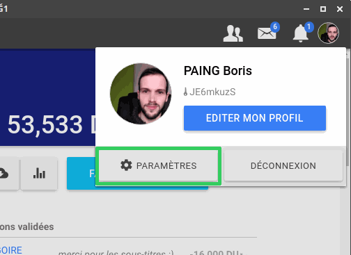
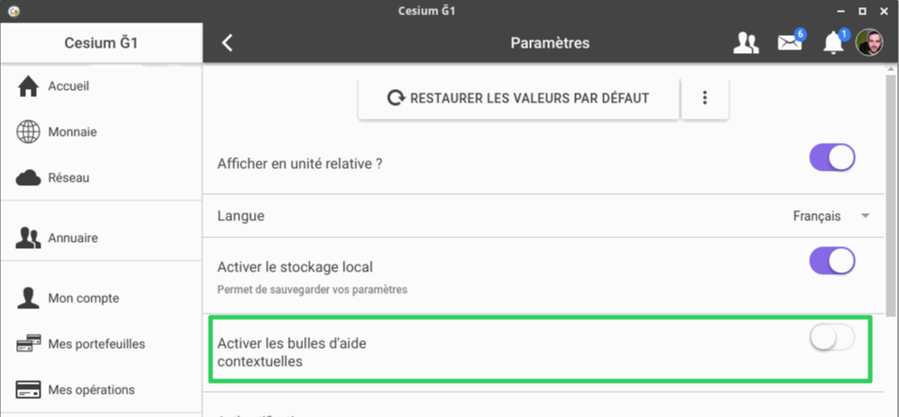

Dans Cesium, il est fréquent que des bulles d'aide apparaissent pour vous expliquer certaines fonctionnalités.
Vous pouvez les désactiver en vous rendant dans le menu "Paramètres" :

puis en décochant l'option "Activer les bulles d'aide contextuelles" :
